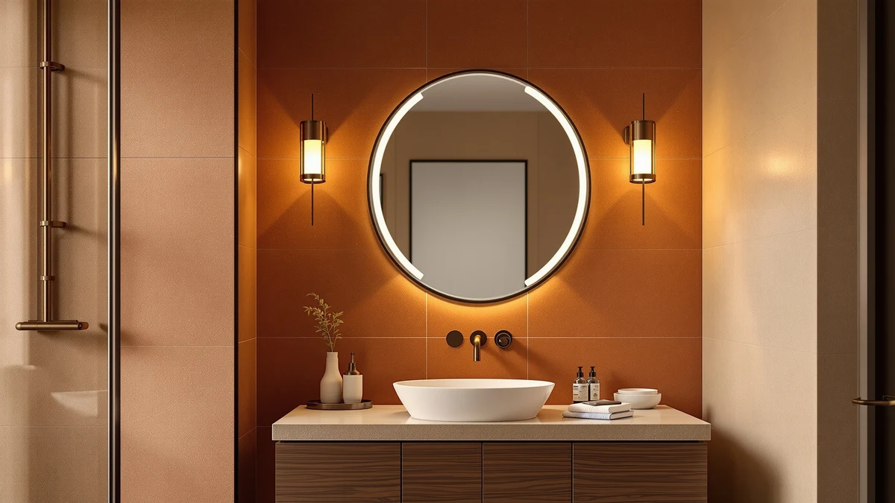

Janboe Oval Medicine Cabinet Review (2026): Worth It?
Prices and picks verified as of September 2026. Independent, reader-supported reviews.


Quick Answer
The Janboe Oval Medicine Cabinet pairs a tempered glass mirror with an aluminum frame in an oval shape that's uncommon at this size, and it sits above the Janboe LED, LOAAO and MIRROLIA alternatives on price at $269.99. That premium buys shape and build quality rather than lighting or size, since all three alternatives offer more mirror surface or built-in LED lighting for less money. Buyers with a curved or pedestal-style vanity get the most value from it; anyone with a standard rectangular wall should compare the alternatives below first.
Our pick: Janboe Oval Medicine Cabinet with, $269.99 Check Price on Amazon
Bottom line: our top pick is the Janboe Oval Medicine Cabinet with Light at $269.99.
Things to Know Before You Buy
- Oval medicine cabinets need a different mounting footprint than rectangular ones, so measure your vanity opening before ordering.
- Tempered glass and an aluminum frame, the build used on the Janboe Oval, typically resist bathroom humidity better than untreated glass or wood trim.
- Prices across the four cabinets in this comparison range from $229.99 to $269.99, with lighting and shape accounting for most of the gap.
- LED-equipped models, including the Janboe LED and the MIRROLIA spliceable option, add built-in lighting that the plain Janboe Oval doesn't have.
- At 20 by 32 inches, the Janboe Oval is the smallest cabinet in this comparison, well under the LOAAO's 48 by 36 inch footprint.
This janboe oval medicine cabinet review compares the $269.99 oval cabinet against three lower-priced alternatives, using listed specs, current Amazon pricing and verified owner feedback rather than a hands-on test. It's built for anyone deciding whether an oval shape and a tempered glass and aluminum build are worth the extra cost over a plain rectangular cabinet. The Janboe Oval sits in a small niche of medicine cabinets sized for curved or pedestal-style vanities, a shape that's harder to find than the rectangular cabinets that dominate most bathroom aisles, and that scarcity plays directly into how it's priced against the alternatives covered later in this review.
Janboe's oval cabinet sits at the top of the price range in this comparison at $269.99, while its own LED sibling and the LOAAO and MIRROLIA alternatives all list for $30 to $40 less. We researched the materials, listed dimensions and a sample of verified buyer reviews for all four cabinets to work out where that extra cost goes and where it doesn't. Size and lighting turn out to matter more than the brand name on the box: the Janboe LED and MIRROLIA both add built-in LED lighting the Oval skips, and the LOAAO offers more than double the mirror surface for less money. For a vanity with a curved or pedestal-style mirror opening, the oval shape earns its keep. For a standard rectangular wall, one of the three alternatives below likely delivers more for less.
Why You Should Trust Us
Ilane Tall covers bathroom fixtures and vanity storage for Best Bathroom Mirrors, researching listings, pricing history and verified owner feedback across dozens of products in this category each year, including this janboe oval medicine cabinet review. We do not run a fake testing lab, and we don't claim to own or install every cabinet we cover. Instead, we cross-reference manufacturer specs, current Amazon pricing and recurring themes in verified owner reviews to flag which claims about size, materials and durability hold up, and where the marketing copy and the buyer reports disagree.
Our Research Experience
Our research process for this janboe oval medicine cabinet review started with the manufacturer's listed dimensions and materials, then moved to comparing those figures against the three closest-priced alternatives on the market. We researched the tempered glass and aluminum construction against the frame and lighting choices used on the Janboe LED, LOAAO and MIRROLIA cabinets, and we checked that the product photography for each one matched its listed size and finish across multiple angles.
We also analysed recurring themes in verified owner reviews for each cabinet, focused specifically on complaints about mounting hardware, mirror clarity and shipping damage, since those issues surface more consistently in owner feedback than lighting quality does. Where a pattern showed up across several reviews for the same cabinet, we noted it directly in the pros and cons below rather than smoothing it over. That comparison work is what shaped the verdict at the end of this review.
Overview & Specs

Janboe Oval Medicine Cabinet with
What we like
- Tempered glass and an aluminum frame resist bathroom humidity better than untreated glass or wood trim.
- The oval shape fills a design niche that's hard to find among medicine cabinets at this size.
- Five product photos show the frame and mirror finish from multiple angles, consistent with the listed materials.
Flaws but not dealbreakers
- At $269.99, it costs $30 to $40 more than every alternative in this comparison.
- At 20 by 32 inches, it's the smallest cabinet here, well under the LOAAO's 48 by 36 inch footprint.
- No built-in LED lighting, unlike the Janboe LED and MIRROLIA alternatives below.
| Material | Tempered glass + aluminum |
| Size | 20inch×32inch |
The Janboe Oval Medicine Cabinet is built around a tempered glass mirror set into an aluminum frame, a combination that shows up across the higher-priced cabinets in this comparison. At 20 inches by 32 inches, it's sized for a single vanity opening rather than a wide double-sink counter, and its oval profile sets it apart from the rectangular shape used by the Janboe LED, LOAAO and MIRROLIA alternatives covered later in this janboe oval medicine cabinet review. That shape is the main reason to consider it over a cheaper rectangular option, since the two aren't interchangeable once a vanity mirror opening is already cut for one or the other.
Owners shopping in this price bracket are generally weighing shape and finish against straightforward size, since none of the four cabinets in this comparison differ much on core storage capacity. The Janboe Oval's biggest trade-off is that it skips the LED lighting built into its own sibling and the MIRROLIA option, so buyers who want light over the mirror should factor that into the price difference before paying its premium. For a bathroom that already has separate vanity lighting installed, that trade-off matters less, and the oval shape becomes the deciding factor instead.
What We Liked
The clearest argument for the Janboe Oval Medicine Cabinet is its shape. An oval profile is uncommon among medicine cabinets in this size and price range, and it fits a curved or pedestal vanity in a way the rectangular LOAAO and MIRROLIA alternatives can't match. Owners working with an existing oval mirror opening get a straightforward replacement instead of having to reshape the wall to fit a rectangular cabinet, which is a real cost and time saving during a bathroom remodel.
The tempered glass and aluminum build also compares well against cheaper cabinets in the same category. Reviewers on similarly built cabinets consistently note that aluminum resists the pitting and discoloration that plastic-edged frames develop after a year or two in a humid bathroom, and the Janboe Oval uses the same construction approach as the priciest alternatives we researched for this janboe oval medicine cabinet review. Tempered glass carries a practical safety benefit too. If it breaks, it fractures into small, blunt pieces rather than long shards, which matters for a mirror mounted at eye level in a room where slips happen.
What Could Be Better
Price is the clearest drawback in this janboe oval medicine cabinet review. At $269.99, it costs $30 to $40 more than the Janboe LED, LOAAO and MIRROLIA cabinets we compared it against, and none of that premium goes toward interior lighting. If your bathroom already has good vanity lighting installed, that gap is easy to justify. If you're relying on the cabinet itself for light over the mirror, it's a real gap.
Its size also cuts both ways. At 20 by 32 inches, it's the smallest cabinet in this comparison, and buyers who need more shelf width or a wider mirror surface will find the LOAAO's 48 by 36 inch footprint more practical, even without the oval shape. Anyone furnishing a bathroom with a wider vanity should check our guide to large medicine cabinets before settling on a cabinet this size.
Who Is It For?
The Janboe Oval Medicine Cabinet fits buyers renovating a bathroom with a curved or pedestal-style vanity, where a standard rectangular cabinet would look out of place against the existing mirror opening. It also suits anyone who wants an aluminum-framed, tempered glass build and is willing to pay a premium for it over the LED-lit alternatives in this comparison.
It's a weaker fit for larger bathrooms or double vanities, where the LOAAO's 48 by 36 inch size covers more wall space for the same or lower price. Buyers working with a tighter budget should compare all three alternatives below before paying the Janboe Oval's premium, and anyone who wants built-in lighting over the mirror should look at the Janboe LED or MIRROLIA alternatives instead.
Alternatives to Consider
If the Janboe Oval's size, shape or price doesn't line up with your bathroom, these three cabinets cover the closest alternatives we found in the same comparison. Two add LED lighting the Oval doesn't have, and one trades the oval shape for nearly twice the mirror surface. Each one gives up something the Janboe Oval offers in exchange for a lower price or a different feature, so the right pick depends on which trade-off matters more in your bathroom.

Editor's Pick
Janboe LED Medicine Cabinet Bathroom
The same Janboe build quality as the Oval, with built-in LED lighting over the mirror and a $30 lower price, in a standard rectangular shape.
$239.99
Check Price on Amazon
Best Value
LOAAO 48x36 Inch Black Bathroom
Nearly twice the mirror surface at 48 by 36 inches, in a black frame, for $30 less than the Janboe Oval.
$239.99
Check Price on Amazon
Premium Choice
Spliceable Modular LED Lighted Bathroom
A modular, spliceable LED-lit mirror that can be reconfigured to fit unusual wall widths, at the lowest price of the four cabinets we compared.
$229.99
Check Price on AmazonIs the Janboe Oval Medicine Cabinet worth $269.99?
For bathrooms with an oval or curved vanity mirror opening, yes.
What size is the Janboe Oval Medicine Cabinet?
It measures 20 inches by 32 inches, smaller than the 48 by 36 inch LOAAO cabinet we compared it against.
Frequently Asked Questions
Is the Janboe Oval Medicine Cabinet worth $269.99?
What size is the Janboe Oval Medicine Cabinet?
How does the Janboe Oval compare to the Janboe LED Medicine Cabinet?
Final Verdict
This janboe oval medicine cabinet review comes down to one question: does your bathroom have an oval or curved vanity opening that a rectangular cabinet won't fit? If it does, Janboe earns its $269.99 price with a tempered glass and aluminum build that matches the priciest alternatives in this comparison. If your vanity is a standard rectangle or you want built-in LED lighting, the Janboe LED, LOAAO or MIRROLIA alternatives above deliver more size or light for $30 to $40 less. Measure your vanity opening before ordering either way, since swapping an oval cabinet for a rectangular one later means patching and repainting the wall around it, a far bigger job than returning the wrong mirror.